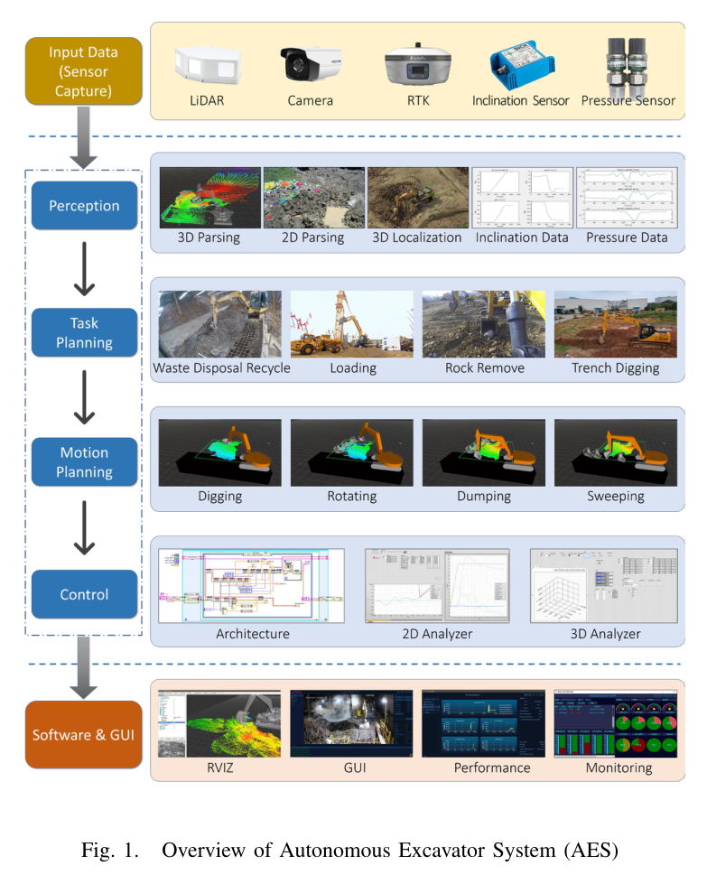
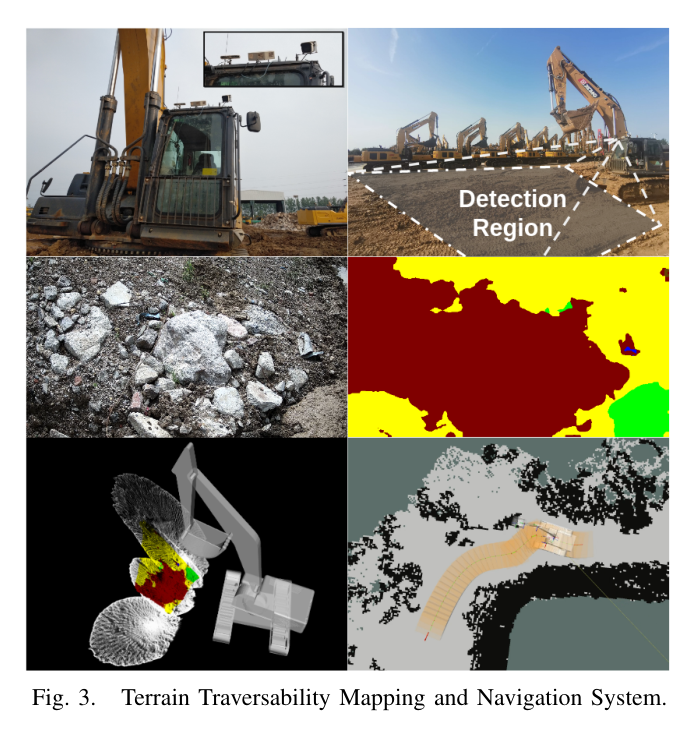
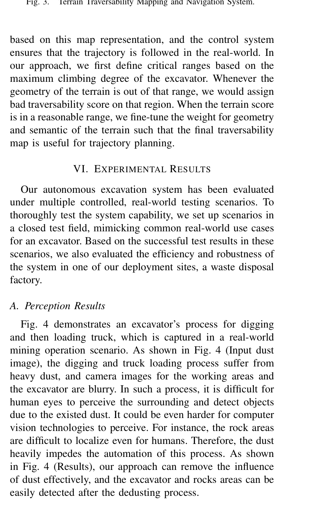
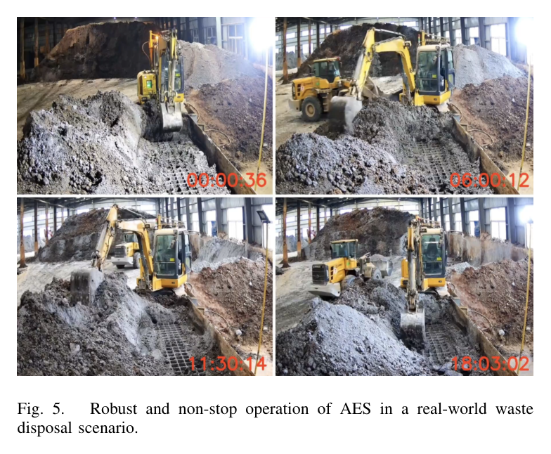
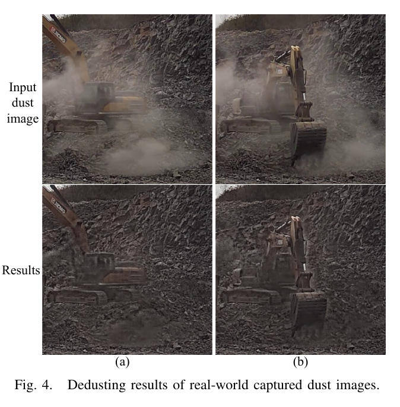

한줄 요약 — 폐기물 재활용 공정의 7.5톤 유압 굴착기에 coarse-to-fine 멀티모달 인지, 팔·베이스를 분리한 계층형 작업·동작 계획, 장비별 유압 lookup-table 제어를 결합해 건·습식 자재와 야간 조건에서 사람 개입 없이 하루 종일 운전하고, 8,500시간 이상의 고객 사용으로 실환경 통합성을 입증한 시스템 연구다.
1.연구 배경 및 동기
위험 폐기물 공정에서 장시간 자율 상차가 필요한 이유
굴착기는 건설·광산·환경복원처럼 비정형 현장에서 쓰이지만, 운전자는 분진·극한 온도·붕괴 위험과 장시간 반복 조작에 노출된다. 논문의 산업 고형폐기물 현장은 독성 분진과 불안정한 더미 때문에 사람을 작업 구역에서 분리할 필요가 특히 크다. 목표는 버킷 궤적 하나가 아니라 인지, 작업 선택, 주행, 유압 제어를 연속 생산공정으로 묶는 것이다.
저자들은 현장 자율화의 요건을 효율성·강건성·일반화로 본다. AES는 RTK·관절 경사계·LiDAR·RGB와 drive-by-wire 굴착기를 기반으로 인지·계획·제어를 ROS 노드로 통합한다. 연구 질문은 이 모듈 체인이 실험실 시연을 넘어 컨베이어 처리율과 24시간 운영 요구를 실제 현장에서 감당할 수 있는가이다.

원문 Figure 1 · PDF p.1 — Fig. 1. Overview of Autonomous Excavator System (AES)
선행 연구의 한계
기존 연구는 개별 인지·궤적·제어 검증에 머물러 실제 생산라인의 연속 운전 근거가 약했다.
분진은 RGB 영상의 대비와 경계를 흐려 바위·트럭·파이프의 검출과 분할을 함께 악화시킨다.
유압 굴착기는 비선형성, 큰 시간지연, 접촉 외란 때문에 계획 궤적을 밸브 명령으로 옮기기 어렵다.
팔 작업과 베이스 이동을 한 수준에서 함께 풀면 작업 구역·waypoint·충돌 제약의 계산이 복잡해진다.
이 연구의 기여
여러 크기의 CAN drive-by-wire 굴착기와 RTK·경사계·LiDAR·RGB, 수동 fallback을 통합했다.
분진 제거·재질 인식·2D 분할·LiDAR 깊이 융합을 잇는 coarse-to-fine 인지를 구성했다.
상위 작업계획, 자재제거·베이스이동 sub-task, 팔·베이스 primitive, 계층형 제어를 연결했다.
실제 공정에서 24시간 무개입, 8,500시간 이상 고객 사용과 67.1m³/h 처리를 보고했다.
2.방법론 및 시스템 구성
하드웨어는 CAN으로 소프트웨어 제어가 가능한 유압 굴착기다. 저자들은 6.5·7.5톤 소형, 33.5톤 표준, 49톤 대형 장비를 개발·시험했고 배치 결과는 7.5톤 중심이다. RTK가 위치, 경사계가 관절각, LiDAR·RGB가 주변 형상과 외관을 제공한다. 긴급 상황에는 사람이 제어권을 회수한다.
인지기가 자재 더미, 불관통 물체, 장애물, 덤프트럭 자세와 주행 가능 지형을 추정하면 상위 계획기가 이동 위치와 굴착 구역을 고른다. MRSP와 BMSP가 세부 작업을 만들고 motion primitive가 팔·베이스 궤적으로 바꾼다. 끝단·베이스 제어기와 장비별 lookup table이 이를 유압밸브 명령으로 변환한다.
AES는 분진 제거, 재질 분류, 정밀 2D 분할, LiDAR 깊이 융합을 순서대로 적용한다. 바위 사례에서는 영상을 복원하고 stone·puddle·pipe 후보를 찾은 뒤 물체를 분할하며, 마지막에 마스크와 깊이로 3D 장애물 상자를 계산한다. 모든 픽셀과 점을 처음부터 정밀 처리하지 않아 현장 계산량과 분진 영향을 함께 줄인다.
자재 더미 형상·재질, 불관통 구역, 장애물, 덤프트럭 자세를 계획기에 전달한다.
카메라 의미와 LiDAR 거리를 결합해 단일 센서 정보의 한계를 보완한다.
이 논문은 모듈별 AP보다 장시간 통합 운전 결과에 평가의 중심을 둔다.
팔과 베이스를 분리한 계층형 계획
굴착기는 팔로 자재를 처리할 때 베이스가 서고, 작업 위치를 바꿀 때 팔 작업을 멈춘다. AES는 이 교대성을 이용해 arm movement와 base movement를 분리하되 high-level planner가 순서를 조정한다. MRSP·BMSP·motion primitive로 책임을 나누어 작업 목표와 실행 궤적 사이의 복잡도를 낮춘다.
MRSP는 선택된 sub-region을 효율적·정확하게 비우는 문제를 담당한다.
BMSP는 다음 작업 위치까지의 베이스 waypoint를 생성한다.
primitive 계층은 장애물·트럭·지형을 반영한 팔·베이스 동작을 만든다.
장비 물리와 공정 처리율을 반영한 운영
주행성 지도는 최대 등판각과 차체 폭을 반영한 로봇 중심 표현이고, 제어기는 버킷 끝단·베이스 추종과 장비별 유압 표를 결합한다. 배치 현장에서는 상차 속도를 벨트 컨베이어와 후단 처리율에 맞추며 건식·습식 자재와 야간을 포함해 하루 전체를 무개입으로 운영했다.
200m² 초과 작업장에서 모든 주행 시험 목표에 도달하고 평균오차 9cm 미만을 기록했다.
7.5톤 장비의 최대 보고 처리량은 67.1m³/h다.
고객 사용은 8,500시간을 넘었고 24시간 연속 운전을 달성했다.

원문 Figure 3 · PDF p.3 — Fig. 3. Terrain Traversability Mapping and Navigation System.
4.실험 결과
실험 환경·장비·데이터
폐기물 처리·재활용 공장에 7.5톤 drive-by-wire 유압 굴착기를 배치했다.
RTK, 관절 경사계, LiDAR, RGB와 ROS 기반 인지·계획·제어 노드를 사용했다.
주행 검증은 200m²보다 큰 실제 작업장에서 수행했다.
독성 분진과 불안정한 산업폐기물을 대상으로 건식·습식 자재와 야간 조건을 포함했다.
실험 프로토콜
폐쇄 시험장에서 일반 굴착 사례를 확인한 뒤 실제 폐기물 공정에서 효율성과 강건성을 평가했다.
주행 목표를 반복 부여해 도달 여부와 오차를 확인하고 상차 속도를 컨베이어 처리율에 맞췄다.
분진 영상은 복원 전후를 비교하고 시스템은 연속시간·누적시간·시간당 처리체적으로 평가했다.
비교 기준
동일 조건의 별도 자율시스템 정량 대조군은 제시하지 않았다.
67.1m³/h는 논문에서 인간 작업자 성능에 근접한 수준으로 해석됐다.
평가 지표
주행 목표 도달과 평균 위치오차
사람 개입 없는 연속 운전시간
고객 현장 누적 사용시간
7.5톤 장비의 시간당 처리체적

원문 Figure 4 · PDF p.3 — Fig. 4 demonstrates an excavator’s process for digging and then loading truck, which is captured in a real-world mining operation scenario. As shown in Fig. 4 (Input dust image), the digging and truck loading process suffer from heavy dust, and camera images for the working areas and the excavator are blurry. In such a process, it is difficult for human eyes to perceive the surrounding and detect objects due to the existed dust. It could be even harder for computer vision technologies to perceive. For instance, the rock areas are difficult to localize even for humans. Therefore, the dust heavily impedes the automation of this process. As shown in Fig. 4 (Results), our approach can remove the influence of dust effectively, and the excavator and rocks areas can be easily detected after the dedusting process.

원문 Figure 5 · PDF p.4 — Fig. 5. Robust and non-stop operation of AES in a real-world waste disposal scenario.
핵심 결과 해석
200m² 초과 실제 작업장에서 mapping·navigation은 모든 시험의 지정 목표에 도달했고 평균 오차를 9cm 미만으로 유지했다. 분진 장면은 원영상에서 작업 구역과 바위가 흐렸지만 복원 결과에서 굴착기와 바위 영역을 구분할 수 있었다. 다만 분진 제거 정확도와 물체 AP 같은 모듈별 수치는 보고하지 않았다.
폐기물 현장에서는 24시간 무개입 동작, 67.1m³/h 최대 처리, 8,500시간 이상 고객 사용을 기록했고 건식·습식·야간 운전을 지원했다. 짧은 데모가 아니라 생산라인 속도와 위험 자재 조건에서 인지·계획·제어·운영 계층이 장기간 함께 작동했다는 점이 핵심이다.
정량 결과
평가 항목
정량 결과
조건·맥락
원문 근거
실제 작업장 규모
>200 m²
주행성 지도·내비게이션 평가
PDF p.4
평균 주행 위치오차
<9 cm
실제 작업장 주행 시험 전체
PDF p.4
무개입 연속 운전
24시간
산업폐기물 상차 공정
PDF p.4
시간당 처리체적
67.1 m³/h
7.5톤 굴착기
PDF p.4
고객 누적 사용
>8,500시간
실환경 배치 이후
PDF p.4
실패 사례와 경계조건
heavy dust 입력은 굴착기·바위 경계를 흐려 사람과 비전 알고리즘의 인식을 악화시켰다.
파쇄암·악천후·다양한 자재 물성에 대한 실패율과 무개입 시간은 평가하지 않았다.
안전 개입 횟수, 계획 실패율, 인지 오검출률이 없어 8,500시간의 고장 분포는 판단할 수 없다.

원문 Figure 4 · PDF p.4 — Fig. 4. Dedusting results of real-world captured dust images.
5.한계 및 향후 연구
현재 한계
실증이 특정 산업폐기물 상차 공정에 집중돼 파쇄암·일반 토사·혼합 현장 일반화가 확인되지 않았다.
센서 모델·보정·학습 데이터·계획 비용·제어 파라미터가 선행 논문으로 분산돼 있다.
장시간 운전을 보고했지만 안전 개입률·정지 원인·고장 간 평균시간은 제시하지 않았다.
자재 물성과 굴착 저항을 직접 감지해 primitive를 바꾸는 접촉 적응은 포함하지 않았다.
향후 연구
파쇄암 굴착과 악천후 등 더 다양한 작업·환경으로 검증 범위를 넓힌다.
자재 물리 특성과 굴착 저항력을 감지하고 모델링한다.
불확실성이 커질 때 감속·정지·재계획하는 인지-계획 fallback을 정량 평가한다.
처리량과 함께 충만율·단위체적 에너지·stall·개입 빈도의 장기 벤치마크를 구축한다.
6.한마디로 정리
핵심 방법은?
coarse-to-fine 인지, 의미·기하 주행성 지도, 팔·베이스 계층형 계획, 유압 표 기반 제어를 ROS·CAN 위에 통합했다.
핵심 결과는?
24시간 무개입, 8,500시간 이상 고객 사용, 67.1m³/h 처리와 평균 주행오차 9cm 미만을 보고했다.
한계는?
특정 폐기물 상차 중심이며 파쇄암·악천후·물성 변화와 장기 고장·안전 개입 통계가 부족하다.
#시스템통합·현장실증#환경인식#측위·매핑#작업·궤적계획#제어·MPC#멀티모달 인지#주행성 지도#계층형 계획#CAN 유압 제어
나의 의견 / 우리 연구와의 연관성
자율굴착 연구에서 이 논문의 가치는 개별 정확도보다 시스템 경계와 운용 지속성을 보여준 데 있다. 인지가 상위 작업 선택, 자재제거·베이스이동 sub-task, primitive, 유압 명령으로 이어지는 구조는 필드로봇의 책임 분해 기준이 된다. 팔과 베이스의 교대 계획도 작업주기와 이동 안전을 함께 관리하는 실용적 틀이다.
후속 연구는 이 통합 구조에 자재 물성·접촉 저항 추정을 추가할 수 있다. 영상·LiDAR로 더미를 보고 유압 압력·관절속도로 저항을 추정하면 분진과 지형뿐 아니라 실제 굴착 난이도에도 적응한다. 장기 배치에서는 처리량 외에 위험정지·개입·에너지·부품 부담을 함께 측정해야 한다.
국내 자율굴착기에도 공정 처리율을 조정하는 application layer와 수동 fallback이 필요하다.
MRSP·BMSP 분리는 굴착 재계획과 주행 재계획을 독립 검증하게 한다.
분진 제거와 2D-LiDAR 융합은 건설현장 저가시성 semantic map의 참고 사례다.
8,500시간 실적은 평균 성능과 함께 고장·개입 분포를 공개할 필요를 보여준다.
7.전체 그림·표
본문 핵심 위치에 배치하지 않은 원문 Figure와 Table을 원문 페이지 순서로 수록한다.